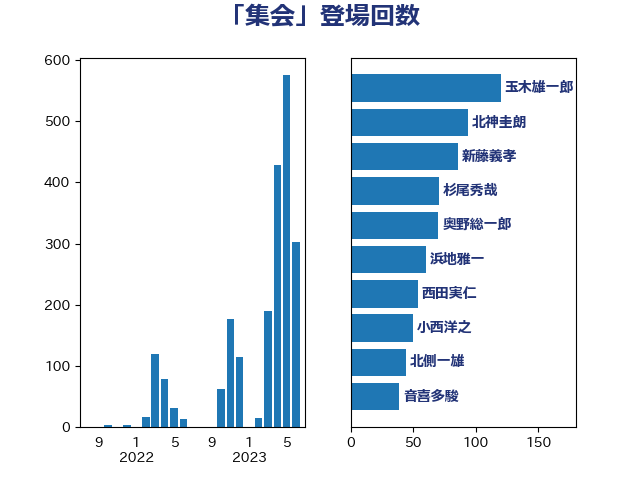

単語「集会」

| 玉木雄一郎 | 国民民主党 | 120 回 |
| 北神圭朗 | 無所属 | 94 回 |
| 新藤義孝 | 自由民主党 | 86 回 |
| 杉尾秀哉 | 立憲民主党 | 71 回 |
| 奥野総一郎 | 立憲民主党 | 70 回 |
| 浜地雅一 | 公明党 | 60 回 |
| 西田実仁 | 公明党 | 54 回 |
| 小西洋之 | 立憲民主党 | 50 回 |
| 北側一雄 | 公明党 | 44 回 |
| 音喜多駿 | 日本維新の会 | 39 回 |
| 山下貴司 | 自由民主党 | 39 回 |
| 熊谷裕人 | 立憲民主党 | 37 回 |
| 安江伸夫 | 公明党 | 35 回 |
| 階猛 | 立憲民主党 | 33 回 |
| 大塚耕平 | 国民民主党 | 32 回 |
| 岩谷良平 | 日本維新の会 | 31 回 |
| 山添拓 | 日本共産党 | 31 回 |
| 矢倉克夫 | 公明党 | 28 回 |
| 打越さく良 | 立憲民主党 | 28 回 |
| 小林一大 | 自由民主党 | 27 回 |
| 小野泰輔 | 日本維新の会 | 24 回 |
| 佐々木さやか | 公明党 | 24 回 |
| 山本太郎 | れいわ新選組 | 22 回 |
| 柴山昌彦 | 自由民主党 | 20 回 |
| 國重徹 | 公明党 | 20 回 |
| 赤嶺政賢 | 日本共産党 | 18 回 |
| 礒崎哲史 | 国民民主党 | 18 回 |
| 山本順三 | 自由民主党 | 17 回 |
| 古賀千景 | 立憲民主党 | 17 回 |
| 中川正春 | 立憲民主党 | 17 回 |
| 福島みずほ | 社会民主党 | 16 回 |
| 山田賢司 | 自由民主党 | 15 回 |
| 舟山康江 | 国民民主党 | 14 回 |
| 三木圭恵 | 日本維新の会 | 14 回 |
| 福山哲郎 | 立憲民主党 | 13 回 |
| 田村智子 | 日本共産党 | 12 回 |
| 岡田直樹 | 自由民主党 | 12 回 |
| 山井和則 | 立憲民主党 | 12 回 |
| 塩川鉄也 | 日本共産党 | 12 回 |
| 西銘恒三郎 | 自由民主党 | 11 回 |
| 篠原孝 | 立憲民主党 | 11 回 |
| 石川大我 | 立憲民主党 | 11 回 |
| 牧野たかお | 自由民主党 | 11 回 |
| 小林鷹之 | 自由民主党 | 11 回 |
| 齋藤健 | 自由民主党 | 10 回 |
| 辻元清美 | 立憲民主党 | 10 回 |
| 赤池誠章 | 自由民主党 | 10 回 |
| 堀井巌 | 自由民主党 | 10 回 |
| 浅田均 | 日本維新の会 | 9 回 |
| 新垣邦男 | 立憲民主党 | 9 回 |
| 後藤祐一 | 立憲民主党 | 9 回 |
| 片山さつき | 自由民主党 | 8 回 |
| 仁比聡平 | 日本共産党 | 8 回 |
| 進藤金日子 | 自由民主党 | 7 回 |
| 紙智子 | 日本共産党 | 7 回 |
| 穀田恵二 | 日本共産党 | 7 回 |
| 浅野哲 | 国民民主党 | 7 回 |
| 浅尾慶一郎 | 自由民主党 | 7 回 |
| 佐藤正久 | 自由民主党 | 7 回 |
| 臼井正一 | 自由民主党 | 6 回 |
| 田野瀬太道 | 無所属 | 6 回 |
| 猪瀬直樹 | 日本維新の会 | 6 回 |
| 櫻井周 | 立憲民主党 | 6 回 |
| 森英介 | 自由民主党 | 6 回 |
| 松野博一 | 自由民主党 | 6 回 |
| 宮本徹 | 日本共産党 | 6 回 |
| 加藤明良 | 自由民主党 | 6 回 |
| 井上哲士 | 日本共産党 | 6 回 |
| 中曽根弘文 | 自由民主党 | 6 回 |
| 高良鉄美 | 無所属 | 5 回 |
| 西村康稔 | 自由民主党 | 5 回 |
| 山田宏 | 自由民主党 | 5 回 |
| 笠井亮 | 日本共産党 | 4 回 |
| 秋葉賢也 | 自由民主党 | 4 回 |
| 福島伸享 | 無所属 | 4 回 |
| 松川るい | 自由民主党 | 4 回 |
| 寺田学 | 立憲民主党 | 4 回 |
| 宮路拓馬 | 自由民主党 | 4 回 |
| 塩田博昭 | 公明党 | 4 回 |
| 勝部賢志 | 立憲民主党 | 4 回 |
| 高木かおり | 日本維新の会 | 3 回 |
| 青山繁晴 | 自由民主党 | 3 回 |
| 野村哲郎 | 自由民主党 | 3 回 |
| 道下大樹 | 立憲民主党 | 3 回 |
| 逢坂誠二 | 立憲民主党 | 3 回 |
| 足立康史 | 日本維新の会 | 3 回 |
| 藤川政人 | 自由民主党 | 3 回 |
| 葉梨康弘 | 自由民主党 | 3 回 |
| 渡辺博道 | 自由民主党 | 3 回 |
| 本庄知史 | 立憲民主党 | 3 回 |
| 岸田文雄 | 自由民主党 | 3 回 |
| 岩渕友 | 日本共産党 | 3 回 |
| 山田勝彦 | 立憲民主党 | 3 回 |
| 山岸一生 | 立憲民主党 | 3 回 |
| 宮本岳志 | 日本共産党 | 3 回 |
| 大石あきこ | れいわ新選組 | 3 回 |
| 城井崇 | 立憲民主党 | 3 回 |
| 吉良よし子 | 日本共産党 | 3 回 |
| 高橋千鶴子 | 日本共産党 | 2 回 |
| 阿部知子 | 立憲民主党 | 2 回 |
| 金子恵美 | 立憲民主党 | 2 回 |
| 細野豪志 | 自由民主党 | 2 回 |
| 神谷裕 | 立憲民主党 | 2 回 |
| 滝波宏文 | 自由民主党 | 2 回 |
| 清水貴之 | 日本維新の会 | 2 回 |
| 櫛渕万里 | れいわ新選組 | 2 回 |
| 梅村みずほ | 日本維新の会 | 2 回 |
| 柚木道義 | 立憲民主党 | 2 回 |
| 林芳正 | 自由民主党 | 2 回 |
| 東徹 | 日本維新の会 | 2 回 |
| 本村伸子 | 日本共産党 | 2 回 |
| 川田龍平 | 立憲民主党 | 2 回 |
| 岩本剛人 | 自由民主党 | 2 回 |
| 山谷えり子 | 自由民主党 | 2 回 |
| 寺田稔 | 自由民主党 | 2 回 |
| 大串正樹 | 自由民主党 | 2 回 |
| 和田有一朗 | 日本維新の会 | 2 回 |
| 吉田宣弘 | 公明党 | 2 回 |
| 古川禎久 | 自由民主党 | 2 回 |
| 加藤勝信 | 自由民主党 | 2 回 |
| 前川清成 | 日本維新の会 | 2 回 |
| 中野洋昌 | 公明党 | 2 回 |
| 中川貴元 | 自由民主党 | 2 回 |
| 齊藤健一郎 | 無所属 | 1 回 |
| 鬼木誠 | 立憲民主党 | 1 回 |
| 馬場伸幸 | 日本維新の会 | 1 回 |
| 青山大人 | 立憲民主党 | 1 回 |
| 阿部司 | 日本維新の会 | 1 回 |
| 鎌田さゆり | 立憲民主党 | 1 回 |
| 鈴木俊一 | 自由民主党 | 1 回 |
| 金子道仁 | 日本維新の会 | 1 回 |
| 野間健 | 立憲民主党 | 1 回 |
| 野田国義 | 立憲民主党 | 1 回 |
| 野中厚 | 自由民主党 | 1 回 |
| 里見隆治 | 公明党 | 1 回 |
| 越智俊之 | 自由民主党 | 1 回 |
| 豊田俊郎 | 自由民主党 | 1 回 |
| 谷田川元 | 立憲民主党 | 1 回 |
| 藤原崇 | 自由民主党 | 1 回 |
| 若林健太 | 自由民主党 | 1 回 |
| 若松謙維 | 公明党 | 1 回 |
| 芳賀道也 | 国民民主党 | 1 回 |
| 舩後靖彦 | れいわ新選組 | 1 回 |
| 米山隆一 | 立憲民主党 | 1 回 |
| 窪田哲也 | 公明党 | 1 回 |
| 稲田朋美 | 自由民主党 | 1 回 |
| 福重隆浩 | 公明党 | 1 回 |
| 田村貴昭 | 日本共産党 | 1 回 |
| 田嶋要 | 立憲民主党 | 1 回 |
| 田名部匡代 | 立憲民主党 | 1 回 |
| 牧原秀樹 | 自由民主党 | 1 回 |
| 森本真治 | 立憲民主党 | 1 回 |
| 柳ヶ瀬裕文 | 日本維新の会 | 1 回 |
| 松村祥史 | 自由民主党 | 1 回 |
| 松本尚 | 自由民主党 | 1 回 |
| 松原仁 | 立憲民主党 | 1 回 |
| 末松義規 | 立憲民主党 | 1 回 |
| 早稲田ゆき | 立憲民主党 | 1 回 |
| 斉藤鉄夫 | 公明党 | 1 回 |
| 掘井健智 | 日本維新の会 | 1 回 |
| 徳永エリ | 立憲民主党 | 1 回 |
| 広瀬めぐみ | 自由民主党 | 1 回 |
| 平木大作 | 公明党 | 1 回 |
| 岩田和親 | 自由民主党 | 1 回 |
| 山際大志郎 | 自由民主党 | 1 回 |
| 尾身朝子 | 自由民主党 | 1 回 |
| 小里泰弘 | 自由民主党 | 1 回 |
| 小熊慎司 | 立憲民主党 | 1 回 |
| 小沢雅仁 | 立憲民主党 | 1 回 |
| 小池晃 | 日本共産党 | 1 回 |
| 小島敏文 | 自由民主党 | 1 回 |
| 大西英男 | 自由民主党 | 1 回 |
| 大西健介 | 立憲民主党 | 1 回 |
| 大岡敏孝 | 自由民主党 | 1 回 |
| 吉田はるみ | 立憲民主党 | 1 回 |
| 古庄玄知 | 自由民主党 | 1 回 |
| 前原誠司 | 国民民主党 | 1 回 |
| 伊藤孝恵 | 国民民主党 | 1 回 |
| 伊藤俊輔 | 立憲民主党 | 1 回 |
| 仁木博文 | 無所属 | 1 回 |
| 井原巧 | 自由民主党 | 1 回 |
| 中野英幸 | 自由民主党 | 1 回 |
| 中谷真一 | 自由民主党 | 1 回 |
| 中西祐介 | 自由民主党 | 1 回 |
| 中川郁子 | 自由民主党 | 1 回 |
| 世耕弘成 | 自由民主党 | 1 回 |
| 下村博文 | 自由民主党 | 1 回 |
| 三上えり | 立憲民主党 | 1 回 |